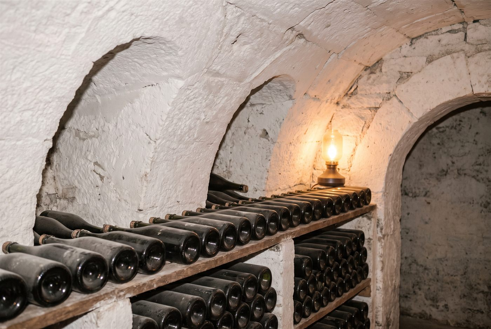

Les domaines · Champagne · Cramant
02
Cramant, Côte des Blancs · Champagne
Domaine Lilbert-Fils
Blancs de blancs grand cru de Cramant, tendus, crayeux et très peu dosés.

Ambiance de Cramant
Famille de vignerons à Cramant depuis 1746, les Lilbert cultivent 3,5 hectares de chardonnay répartis en une quinzaine de parcelles classées grand cru à Cramant, Chouilly et Oiry. Bertrand Lilbert, qui a pris la relève de son père Georges, n'élabore que trois cuvées, toutes en blanc de blancs, remuées à la main dans une cave creusée dans la craie et faiblement dosées. Le style est celui de la Côte des Blancs dans ce qu'elle a de plus pur : tension, minéralité crayeuse et bulle très fine.
Effervescents
- Cépage · ChardonnayCuvée principale de la maison, assemblage de Cramant, Chouilly et Oiry, au moins trois ans sur lies et faiblement dosée.
- Cépage · ChardonnaySélection de vieilles vignes des trois villages, tirée à pression réduite pour une mousse plus délicate; la cuvée la plus rare de la maison.
- Cépage · ChardonnayIssu uniquement de Cramant, dont la parcelle Les Buissons plantée en 1936; produit seulement les bonnes années.
Ces cuvées vous parlent ?
Demander les disponibilités